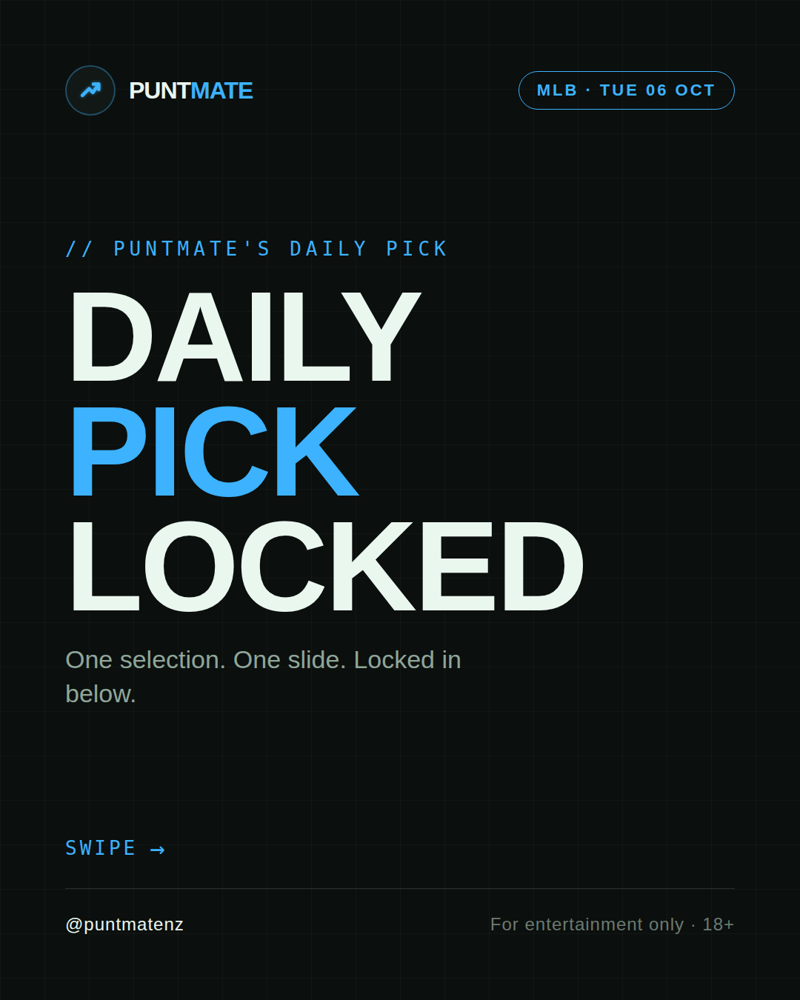
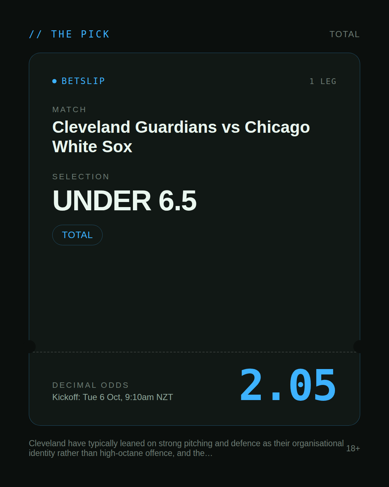
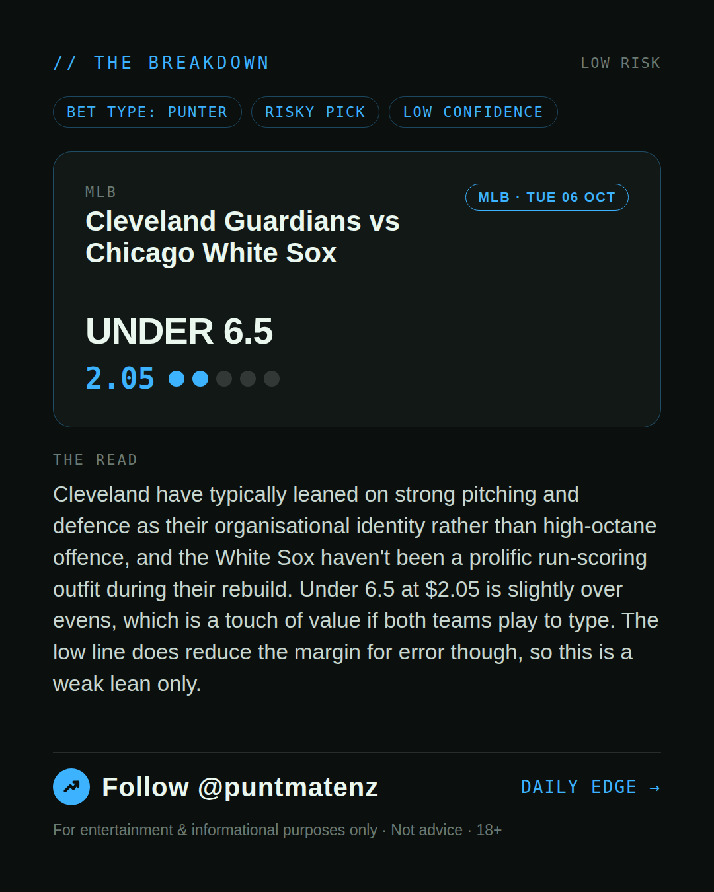
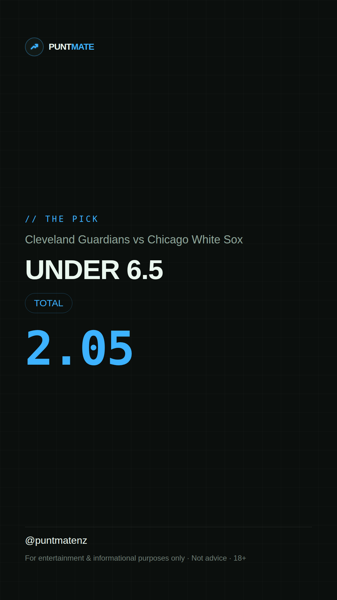

*🎯 PUNTMATE NZ — MLB* 🏟 Cleveland Guardians vs Chicago White Sox *PICK:* UNDER 6.5 *ODDS:* 2.05 (Total) *BET TYPE: PUNTER* _Cleveland have typically leaned on strong pitching and defence as their organisational identity rather than high-octane offence, and the White Sox haven't been a prolific run-scoring outfit during their rebuild. Under 6.5 at $2.05 is slightly over evens, which is a touch of value if both teams play to type. The low line does reduce the margin for error though, so this is a weak lean only._ ────────────────── 📲 Join Telegram for daily picks ⚠️ For entertainment & informational purposes only. Not advice. 18+.
🎯 MLB — Cleveland Guardians vs Chicago White Sox UNDER 6.5 @ 2.05 (Total) BET TYPE: PUNTER Solid touch here. Not a lock, but the value's real and the form backs it up. Cleveland have typically leaned on strong pitching and defence as their organisational identity rather than high-octane offence, and the White Sox haven't been a prolific run-scoring outfit during their rebuild. Under 6.5 at $2.05 is slightly over evens, which is a touch of value if both teams play to type. The low line does reduce the margin for error though, so this is a weak lean only. Follow for daily value picks → @puntmatenz ⚠️ For entertainment & informational purposes only. Not advice. 18+. #PuntmateNZ #SportsBetting #NZTAB #MLB
| has_pick | True |
| pick_id | 2026-10-04_Cleveland_Guardians_vs_Chicago_White_Sox |
| run_id | 37241857065 |
| generated_at | 2026-10-04T22:57:16.649843+00:00 |
| post_date | 2026-10-04 |
| match | Cleveland Guardians vs Chicago White Sox |
| sport | baseball_mlb |
| sport_label | MLB |
| market | Total |
| selection | UNDER 6.5 |
| odds | 2.05 |
| bet_type | PUNTER_BET |
| bet_type_label | BET TYPE: PUNTER |
| bet_type_reason | Solid touch here. Not a lock, but the value's real and the form backs it up. Cleveland have typically leaned on strong pitching and defence as their organisational identity rather than high-octane offence, and the White Sox haven't been a prolific run-scoring outfit during their rebuild. Under 6.5 at $2.05 is slightly over evens, which is a touch of value if both teams play to type. The low line does reduce the margin for error though, so this is a weak lean only. |
| classification | RISKY_PICK |
| risk | RISKY_PICK |
| confidence | LOW |
| confidence_label | LOW |
| final_explanation | Cleveland have typically leaned on strong pitching and defence as their organisational identity rather than high-octane offence, and the White Sox haven't been a prolific run-scoring outfit during their rebuild. Under 6.5 at $2.05 is slightly over evens, which is a touch of value if both teams play to type. The low line does reduce the margin for error though, so this is a weak lean only. |
| public_caution | Keep this one light — the value's there but so is the uncertainty. |
| theme | night |
| carousel_paths | ['data/review/2026-10-04_Cleveland_Guardians_vs_Chicago_White_Sox/cover.png', 'data/review/2026-10-04_Cleveland_Guardians_vs_Chicago_White_Sox/tip.png', 'data/review/2026-10-04_Cleveland_Guardians_vs_Chicago_White_Sox/breakdown.png'] |
| carousel_urls | ['https://raw.githubusercontent.com/kingofthecastle24/puntmate/main/data/cards/2026-10-04_Cleveland_Guardians_vs_Chicago_White_Sox_night_1_cover.png', 'https://raw.githubusercontent.com/kingofthecastle24/puntmate/main/data/cards/2026-10-04_Cleveland_Guardians_vs_Chicago_White_Sox_night_2_tip.png', 'https://raw.githubusercontent.com/kingofthecastle24/puntmate/main/data/cards/2026-10-04_Cleveland_Guardians_vs_Chicago_White_Sox_night_3_breakdown.png'] |
| story_path | data/review/2026-10-04_Cleveland_Guardians_vs_Chicago_White_Sox/story.png |
| story_url | https://raw.githubusercontent.com/kingofthecastle24/puntmate/main/data/cards/2026-10-04_Cleveland_Guardians_vs_Chicago_White_Sox_night_story.png |
| intended_platforms | ['telegram', 'instagram_feed', 'instagram_story', 'facebook'] |
| workflow_state | GENERATED |
| has_punter_multi | False |
| has_gambler_multi | False |
| has_degenerate_multi | False |